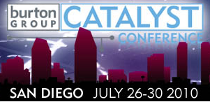

ICF Featured Events at Burton Catalyst 2010 San Diego
The annual summer Catalyst conference put on by the Burton Group is happening again this coming week in San Diego. A large number of Information Card Foundation members and directors will be in attendance. Here is a list of all the events that are of particular interest to ICF members and others involved with open identity technologies:
Tuesday, July 27
- Special Interest Group: Cloud Business Models, 12:30 to 2:30 PM PDT. Bob Blakely, Burton Group VP Identity and Privacy Strategies, plans to discuss contract terms and conditions and contract liability for organizations issuing or consuming identity credentials. SIG sessions are normally reserved for persons who have registered for the Catalyst conference. If space permits, those who are in the area but not full conference participants will also be able to attend. Please register by sending an email to Christopher Stallings (cstallings@burtongroup.com) and refer to the Special Interest Group: Cloud Business Models within your email. Please RSVP by Thursday, July 22. Seating is limited.
- OIX US ICAM Trust Framework Working Group, 5:30 to 6:30 PM PDT, Odysea Lounge. This group is focused on developing the next revision of the OIX US ICAM trust framework that will enable OIX member identity providers to be certified to US ICAM Levels of Assurance 2 and non-PKI 3. This group will meet informally in the Odysea lounge.
Wednesday, July 28
- Burton Group Open Identity For Business Interop, 6:00 to 9:00 PM PDT, Cobalt 500. This is the major interop event at this year’s Catalyst, and involves identity providers, relying parties, and government agencies who are members of ICF, the OpenID Foundation, Open Identity Exchange, Kantara, and InCommon. See http://osis.idcommons.net/wiki/File:Interop_invite.png for more info.
{kind=link}
Thursday, July 29
- Open Identity Exchange Board Meeting, 8:00 to 9:30 PDT, Sapphire 411. This meeting is primarily for OIX board members—if you would like to attend, please contact OIX Executive Director Drummond Reed (director =at= openidentityexchange.org).
- Open Identity for Business: A Roundtable Discussion, 9:45 to 10:20 AM PDT, Sapphire CD. This will be a follow-on panel discussion about the previous evening’s interop and the current issues in open identity technology and infrastructure adoption.
- Open Identity Luncheon Table Tent, 12:30 to 2:00 PM, PDT. To facilitate conversations about the use of Open Identity for Business, there will be an Open Identity tent at the Burton Group lunch following the panel discussion.
- ICF Meeting on Business Models for Higher LOA OPEN IDENTITY CREDENTIALS, 4:00 TO 6:00 PM PDT, Aqua 312. This is an open meeting to continue the conversation about creating a market for higher LOA credentials prior to the ICF board meeting on Friday. Send email to Mary Ruddy (mary =at= meristic.com) to let her know you plan to attend.
Friday, July 30
- ICF Board Meeting, 8:30 to 12:30 PDT, Sapphire 411. This meeting is primarily for ICF board members—if you would like to attend, please contact ICF Executive Director Drummond Reed (director =at= informationcard.net).